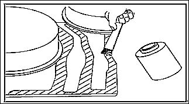

С помощью вращающейся проволочной щетки удалить пропиточное покрытие с внутренних и внешних зон сварки, стараясь не повредить цинковое покрытие;
Зону заземления сделать минимально возможной, а антикоррозионную защиту изделия (катафорезное покрытие) сохранить в максимально возможном объеме.
Тщательно очистить зону ремонта (очистка);
Нанести сварочную грунтовку на все зоны сварки (для новых или старых деталей);

Сварочную грунтовку перед использованием необходимо тщательно перемешать.
Обязательно дождаться высыхания сварочной грунтовки перед выполнением сварочных операций;
После завершения сварки удалить сварочный шлак, следя за тем, чтобы не нарушить прочность материала;
Все углубления сварных швов заполнить и выровнять припоем;
Внутреннюю и внешнюю стороны сварных швов, а также зоны перехода покрытий зашлифовать и покрыть антикоррозионной грунтовкой;
Очистить и загерметизировать внутренние зоны.